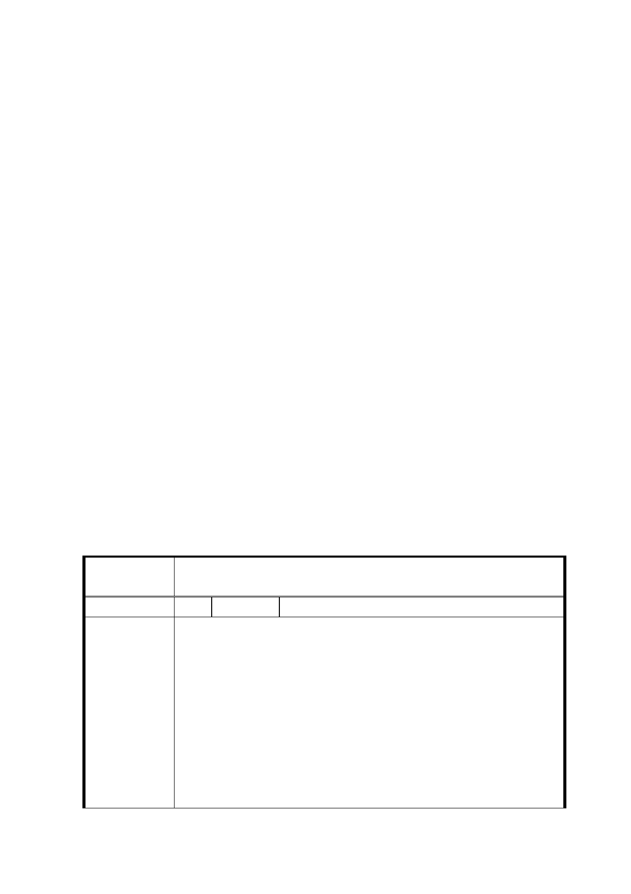

體發展架構下進行，本府都市發展局於104年6月17日召開座談
會，邀請專家學者就「市府劃定更新地區、訂定都市更新計畫
之辦理程序、計畫內容及未來改進措施」進行討論，會議結論：
「公有土地常以劃定更新地區辦理土地開發，但劃定更新地區
的面積僅一個街廓或更細微，導致劃定更新地區卻無法帶動地
區發展、破壞都市紋理及公益性不足等問題；有鑑於此，請都
市發展局（更新處）研議出本市更新地區劃定之標準作業程序
（SOP）提送都委會報告，以做為後續審議的依據。」
四、 另周圍地區土地所有權人（南港區昆陽自辦市地重劃區籌備會）
亦陳情此一劃定都市更新地區案是否符合公平公正之程序，並
陳請國有財產署所送申請變更之範圍其臨街地及公設道路皆為
私有及未開闢道路，建請一併納入開發變更之。
決議：本案洽悉。更新地區劃定範圍應充分考量及兼顧地區發展趨
勢及未來所扮演之功能定位。本案劃定更新地區不符此一期
待，同意退請市府併本市更新地區劃定標準作業程序進行檢
討，並請都市發展局於2至3個月內完成本市更新地區劃定之
標準作業程序，以利後續審議。
臺北市都市計畫委員會公民或團體所提意見綜理表
案
名
劃定臺北市南港區玉成段四小段 303 地號等 6 筆土地為更新
地區
編 號 1 陳情人 南港區昆陽自辦市地重劃區籌備會
主旨:有關國有財產署申請將台北市南港區玉成四小段
305、308、309地號3筆公有土地申請劃設為都市更新
重點地區乙案，詳如說明，請查照。
說明:
陳情理由
一、查本區原為非指定辦理都市更新地區，惟國有財產署為
主導辦理都市更新再依行政院同意函報請台北市政府
申請變更之，然此行為是否符合公平公正之程序建請貴
府審酌。
二、國有財產署所送申請變更之範圍其臨街地及公設道路皆
為私有及未開闢道路(詳如附件)建請貴府一併納入開
-2-